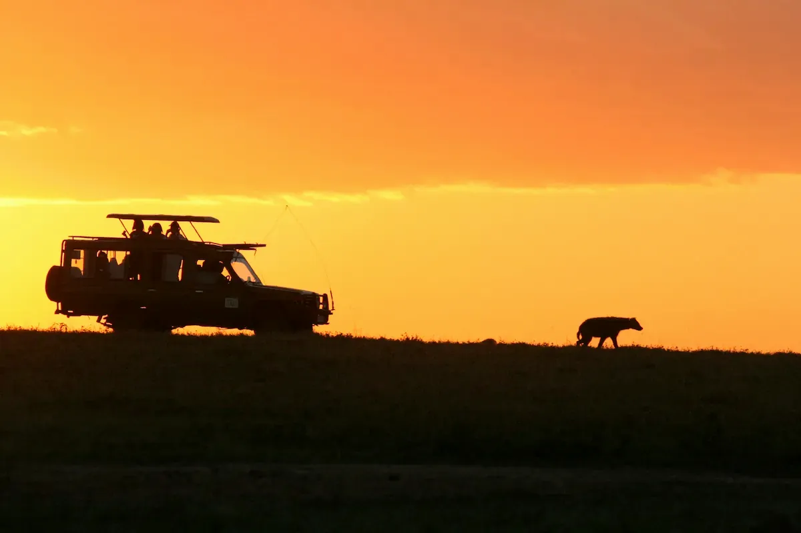
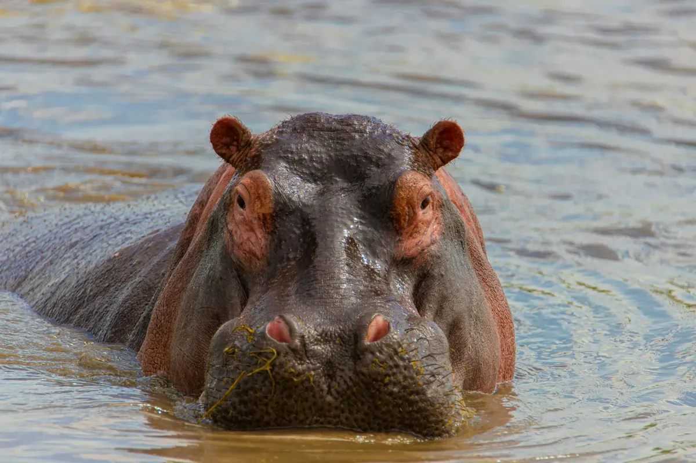
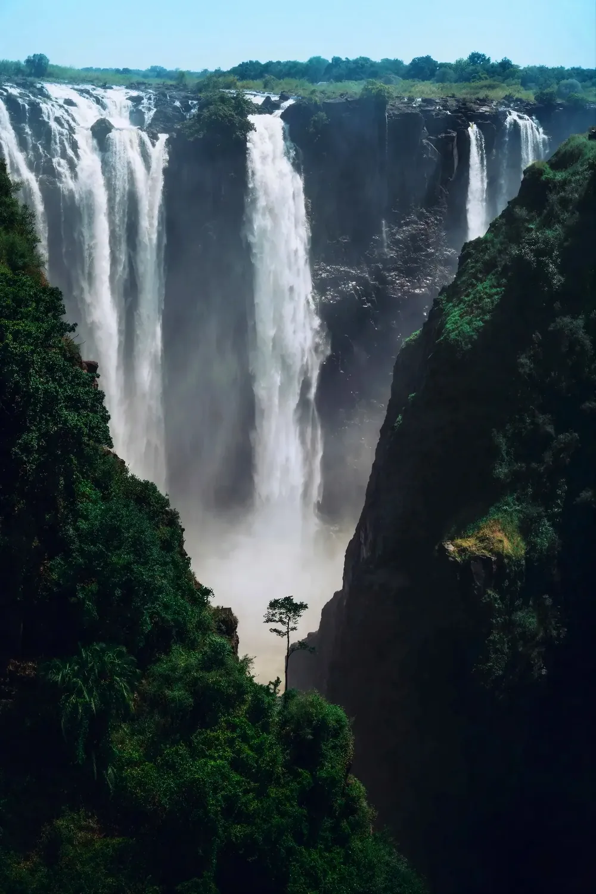
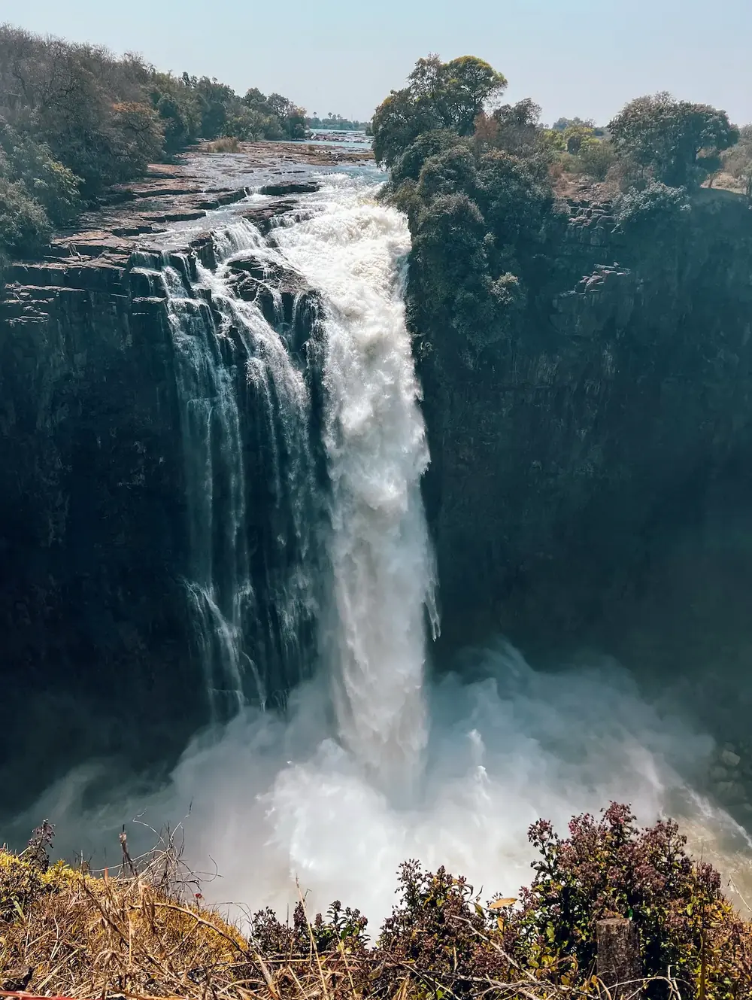
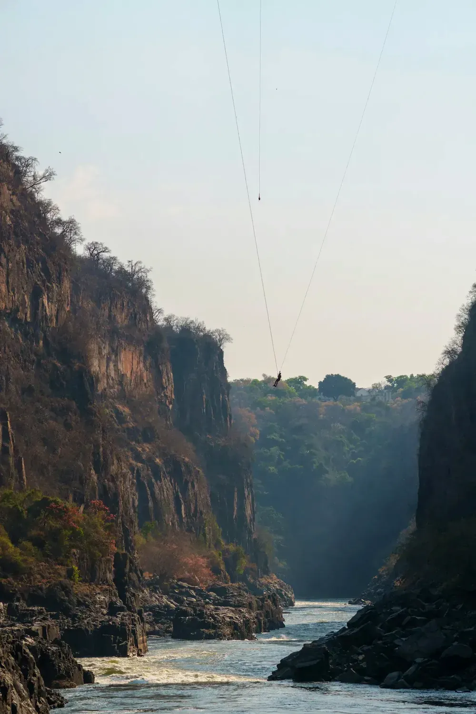
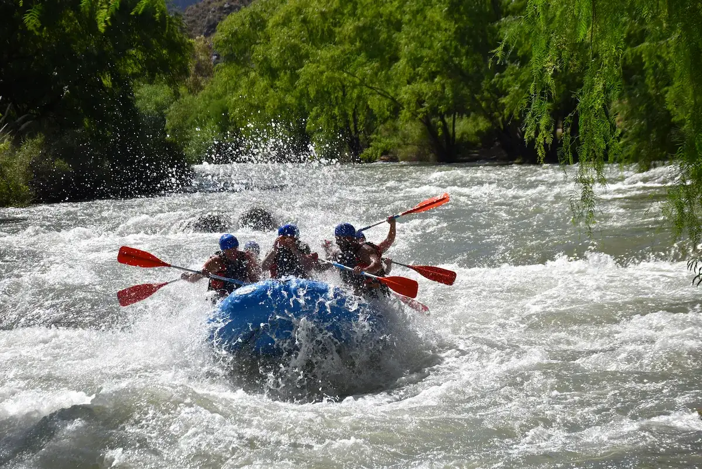
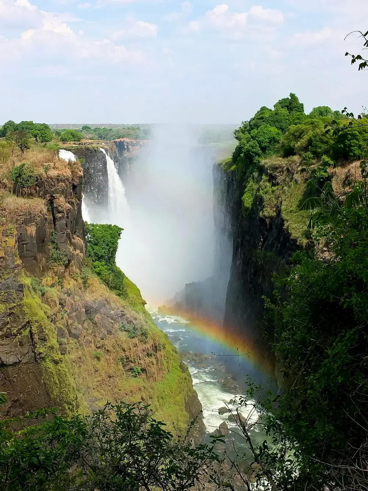
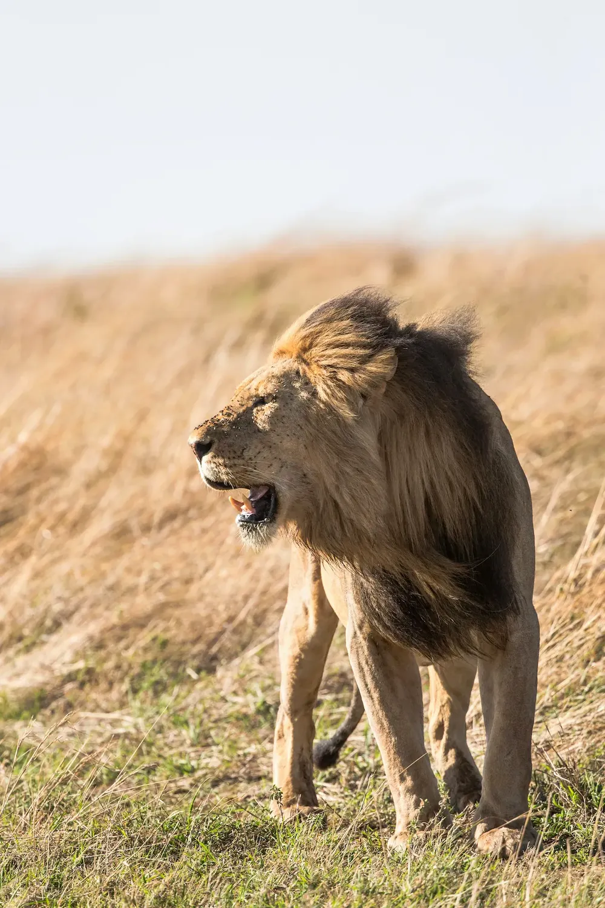

One of the World's Great Adventure Destinations
Victoria Falls is more than a waterfall. It is a full week of experiences - some adrenaline, some quiet, all extraordinary. Here is what is within easy reach of Chitova's, and how we can help arrange it.

The Falls Themselves
A mile of water dropping over 100 metres into the gorge below - mist that rises visibly for miles, a roar the locals call "the smoke that thunders," and rainbows that hang in the spray on any clear day. Nothing about it photographs as large as it feels standing in front of it.
Rainforest Walk
A network of trails through the rainforest the spray itself sustains, with more than a dozen viewpoints along the gorge and the single most visited attraction in Zimbabwe just steps from the entrance.
Bring a rain jacket - the mist reaches you long before the railings do, and on a clear day it throws rainbows across the gorge for most of the walk.

Devil's Pool
Swim right at the edge of a 100-metre drop, in a natural rock pool. Open only in the low-water season, August through January.
Sunset Cruise
Drift along the upper Zambezi as the sky turns gold, with hippos and elephants often visible on the banks.

Bungee & Gorge Swing
Jump from the Victoria Falls Bridge - one of the highest and most iconic commercial bungee jumps on the continent. The bridge sits directly on the Zimbabwe-Zambia border, with a gorge swing available for a different sensation. Operates year-round, weather permitting.
White-Water Rafting
Grade 5 rapids below the Falls, considered among the best commercially-run white-water in the world - a different way entirely to feel the same river's power. Routes shift with the water level, but the rapids run most of the year. Life jackets, helmets, and safety kayakers are standard - no experience necessary, just a willingness to get thoroughly soaked.


Two Countries, One Wonder
The Victoria Falls Bridge carries you across the gorge and straight onto the Zambian side, where the view - and the visa stamp - both change.
Many guests do both sides in a single day: Zimbabwe's Rainforest Walk in the morning, lunch on the bridge, then Zambia's Knife-Edge Bridge and Livingstone Island in the afternoon.
Lions, Elephants & the View From Above
Victoria Falls sits inside its own wildlife corridor. Zambezi National Park is fifteen minutes from the house, with herds of elephant grazing along the riverbank and hippo pods surfacing just off the water's edge most afternoons. Venture a little further and Chobe and Hwange put lion and cheetah properly within reach.
For a different kind of scale entirely, the "Flight of Angels" lays the full width of the gorge out beneath you - then it's back to the ground for reserves that hold some of the most sought-after wildlife on the continent, just a short drive from the house.
Zambezi National Park
Fifteen minutes away. Elephant, buffalo, and hippo along the river, most reliable at dawn and dusk.
Chobe & Hwange
Lion, leopard, cheetah, and the rest of the Big Five within reach for a half or full-day drive.
Flight of Angels
Thirteen and twenty-five minute helicopter tours over the gorge, daily, weather permitting.

When to Go
The Falls change dramatically through the year, and each season rewards something different.
High water (February–May) brings the Falls to their most thunderous - full spray, rainbows, and a wall of white you can hear from town before you see it. Devil's Pool closes during this stretch, and the Rainforest Walk becomes an exercise in getting gloriously soaked.
Low water (August–January) drops the water and reveals the rock face itself, opening Devil's Pool for swimming. Days turn warmer and drier, and it's peak season for most of what's on this page - book ahead if you're planning to visit then.
We had the most amazing stay. The house is exactly as described. Private, peaceful and so close to all the activities. Will definitely return.
Sarah · United States · Airbnb 5/5Everything You Need to Know
A few practical notes to help you plan, gathered from what guests ask us most.
Getting There
- 10 minute drive from the house
- We can arrange transfers
- No car rental needed
What to Bring
- Swimwear and a change of clothes
- Reef-safe sunscreen
- Comfortable closed-toe shoes
- A reusable water bottle
Booking & Timing
- Most activities run year-round
- Devil's Pool: Aug - Jan only
- Advance booking recommended in peak season
Included With Your Stay
- Pickup coordinated from the guesthouse
- Trusted local operator recommendations
- No concierge fee

We can arrange the adventure. You just enjoy it.
From first message to the moment you're back at the pool - here's how it works. Tell us what you want to do - rafting, the gorge swing, Devil's Pool, a sunset cruise - and message us anytime before or during your stay. From there, we can arrange everything: bookings, timing, and pickup from the guesthouse, sorted directly with trusted local operators. You just show up. No research, no phone calls, no second-guessing - just the experience, exactly as planned.